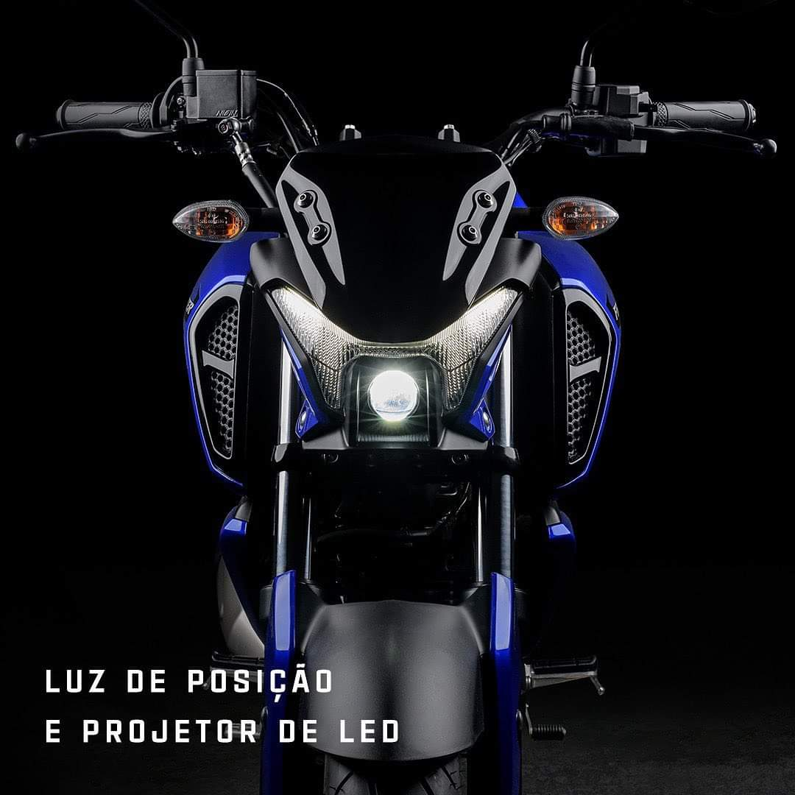
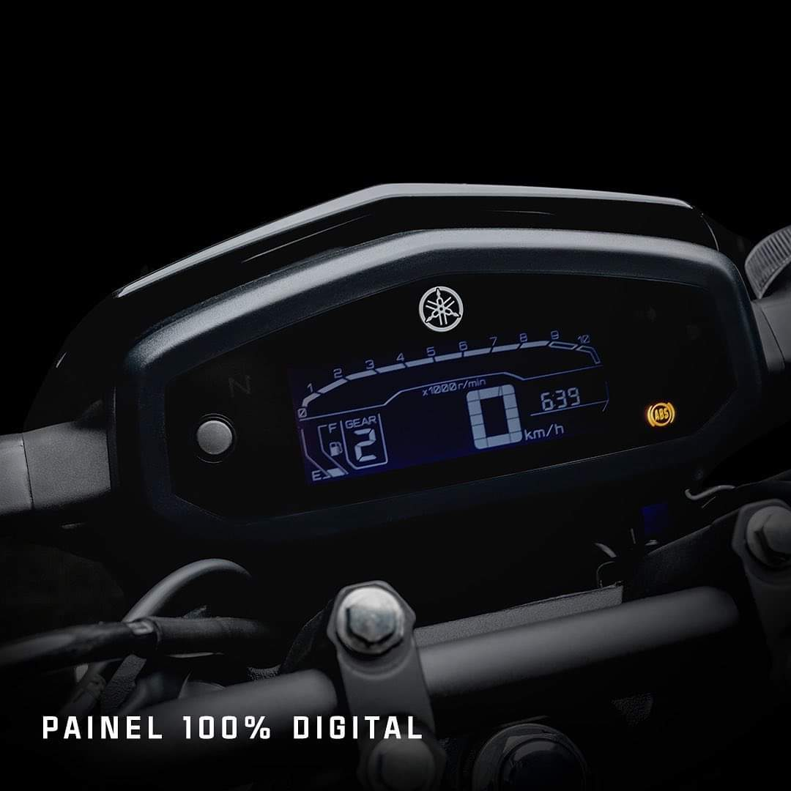
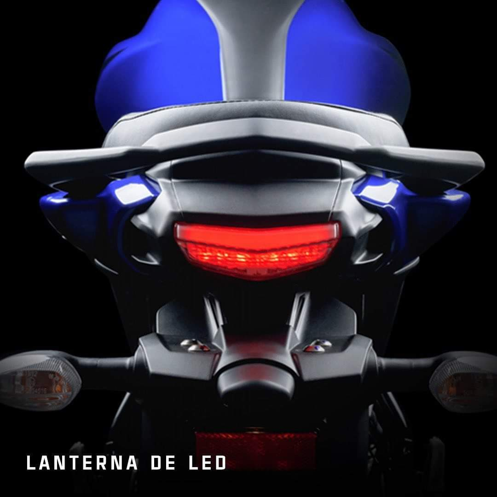
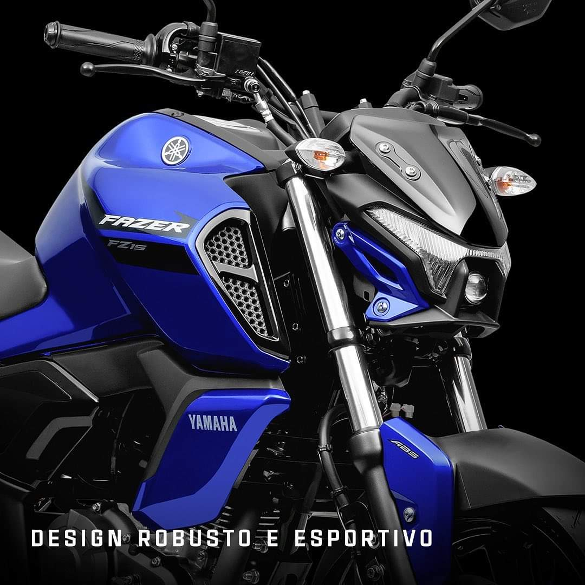
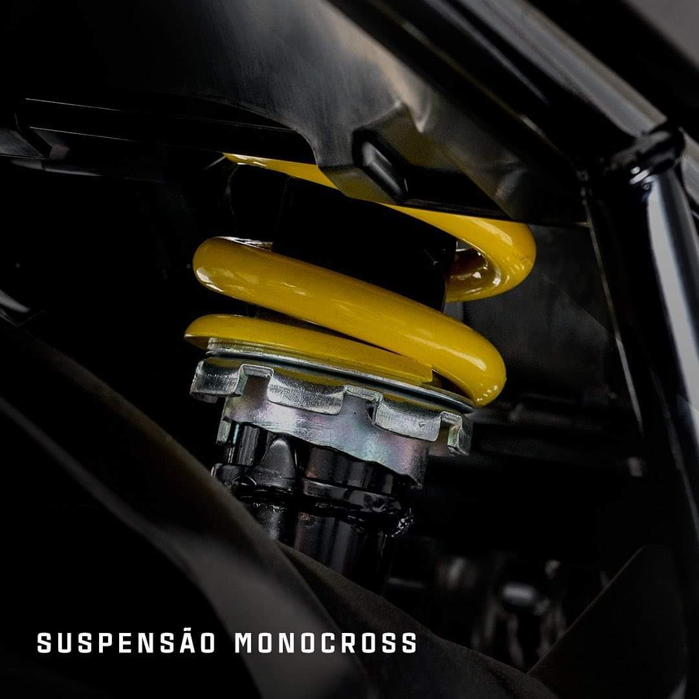

Foi apresentado hoje ao Brasil a mais nova Yamaha Fazer 150, veio para revolucionar no segmento urbano, trata-se de um modelo agil, robusto e econômico, um verdadeiro tanque de guerra para o uso profissional.

Painel totalmente digital e de facil visualização mesmo em ambiente muito claro ou escuro
Trazendo maior durabilidade e segurança, a lanterna traseira também é LED
Com seu design esportivo, atrai olhares por onde passa
Sua suspensão monocross trazendo mais conforto e resistência
